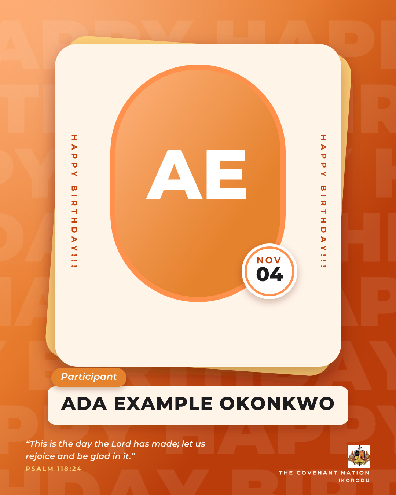

One secure door that lets other church apps ask FOF about people, groups, the schedule and more. Each app gets its own key, sees only what it is allowed to, and can be switched off at any time.
Church apps never touch FOF's database. Every question goes through one door that checks four things before it answers.
An app gets only the permissions it needs. These cover what participants, supports and admins see in the FOF app.
By phone or email: which cohorts, finished or not, and whether they serve on the FOF team.
people:lookupContact details, photo, date of birth, group and support, weekly attendance, a cohort's whole list.
people:readWhat each participant is believing God for, as their support sees it.
faith:readSupports and admins on a cohort, their roles, hubs and groups.
team:readMeeting days and times, supports, leads and members. Never call links.
groups:readClass dates, titles and teachers, and the weekly programme with its teams.
schedule:readEvery cohort's rest, mobilisation, classes and spare week, upcoming cohorts, church events and holidays.
planner:readDaily scriptures opened so far with likes and shares, announcements sent to everyone, shared files.
content:readWho has a birthday coming up, and a finished picture on FOF's template.
birthdays:readDates of the cohort running now and the next one.
cohorts:readThe teen permission is separate from every other. Here is the same teenager, as two different apps see them.
Teens are also left out of birthdays, and their birthday picture is refused.
Every teen record it views is counted and shown to FOF admins, app by app.
For example: "who is in Cohort 10?", with its key attached.
Church appUnknown or switched-off keys are turned away.
401 if notThe key must be allowed to ask this question.
403 if notUp to 60 questions a minute per app.
429 if overOnly the agreed details, teens restricted unless allowed.
200Which app, what it asked, when, and how many teens it saw. Never the answer.
AlwaysSettings → Church app access. Only full admins can open it.
A church app can ask for a finished birthday picture for anyone it is allowed to see: their photo (or initials), name, date and a Bible verse on FOF's template, ready to post.

Today, this week, or the next year.
One request per person. Choose one of six verses, or let FOF pick.
Post it in the church app, a group chat or a status.
Not built yet. Agreed shape: people register in the church app, fill in only what FOF still needs there, and see their FOF login right away.
The church app sends FOF what it already knows.
Only the few things FOF still needs, inside the church app.
Shown in the church app. The first sign-in asks for a new password.
Once email is connected, the login also arrives in their inbox.
Authorization: Bearer fof_live_…current for the running cohort, or a cohort id.curl "https://…supabase.co/functions/v1/public-api/v1/people/lookup?phone=08031234567" \
-H "Authorization: Bearer $FOF_API_KEY"
{ "found": true,
"participants": [ { "name": "Ada Example", "isTeen": false,
"cohort": { "name": "Cohort 10" }, "inGroup": true } ],
"teamRoles": [] }